06 / Case study
Boncafé
When a café's coffee machine breaks, everything stops. This app lets Boncafé customers book a repair, pick a time, snap a photo of the problem and follow up on reports, all in a few taps.
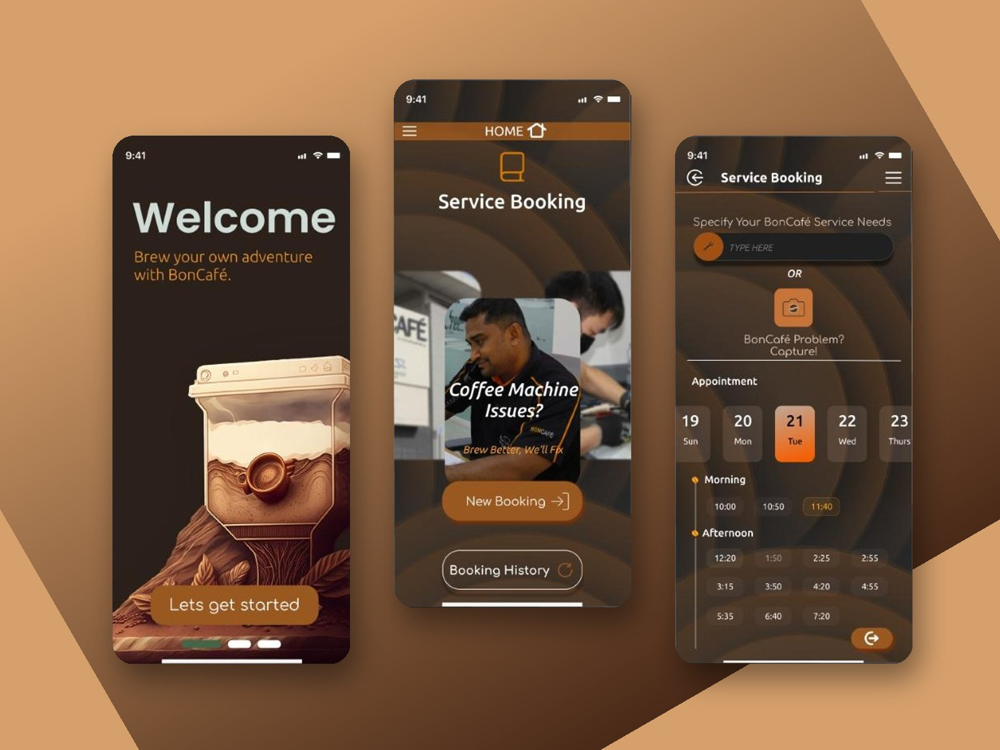
From lo-fi to hi-fi
I started with lo-fi wireframes to sort out the flow, then took the screens to high fidelity. The visual language comes from coffee itself: deep browns, warm orange accents and soft circular backgrounds that feel like looking into a cup.
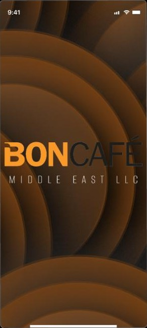
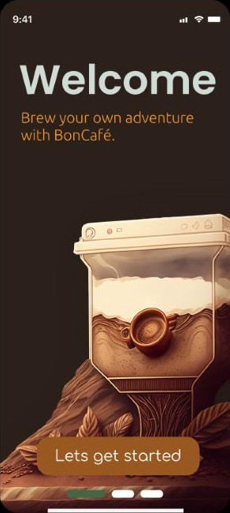
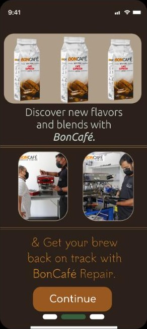
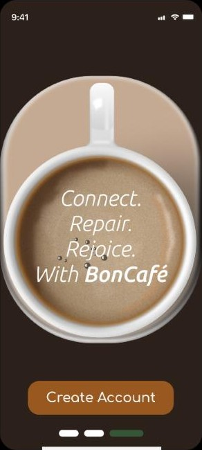
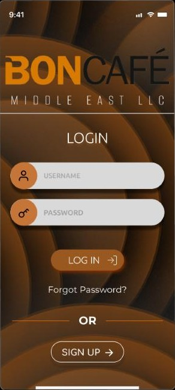
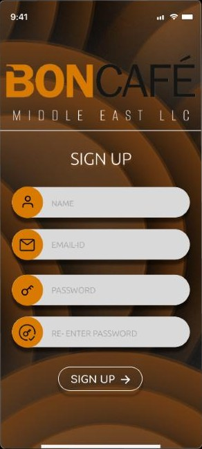
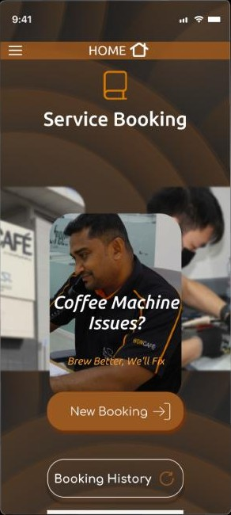
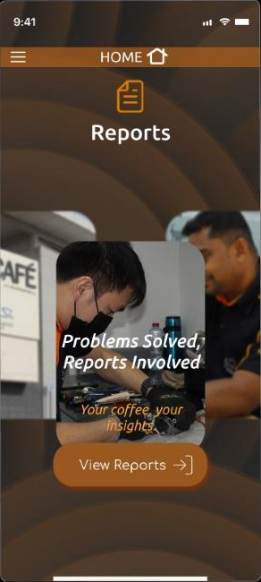
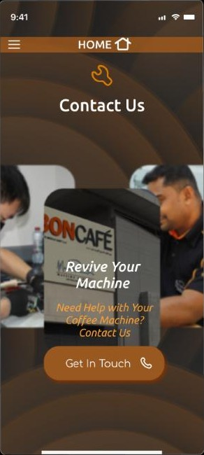
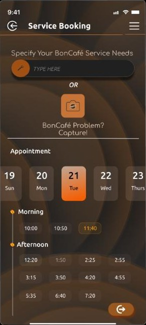
Swipe → Onboarding, login, home and booking
Booking in one screen
The booking flow is the heart of the app. Customers type or photograph the issue, pick a day and choose a time slot, all on one screen so nobody gets lost halfway through.
Team
Boncafé was a team project. I worked on the lo-fi wireframes, the high-fidelity screens and the branding and visuals, alongside teammates including Eyron Araza.
Next project →